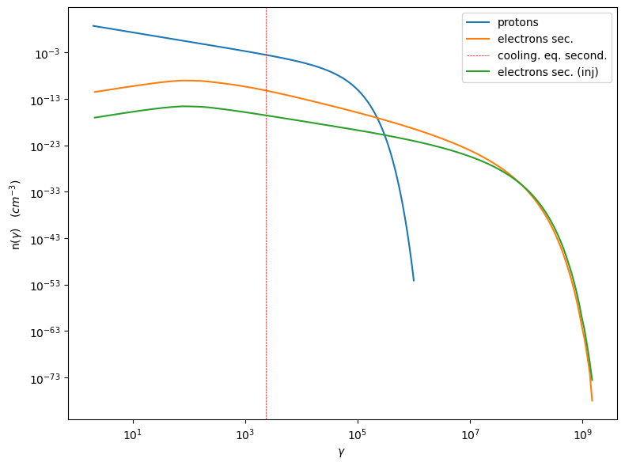
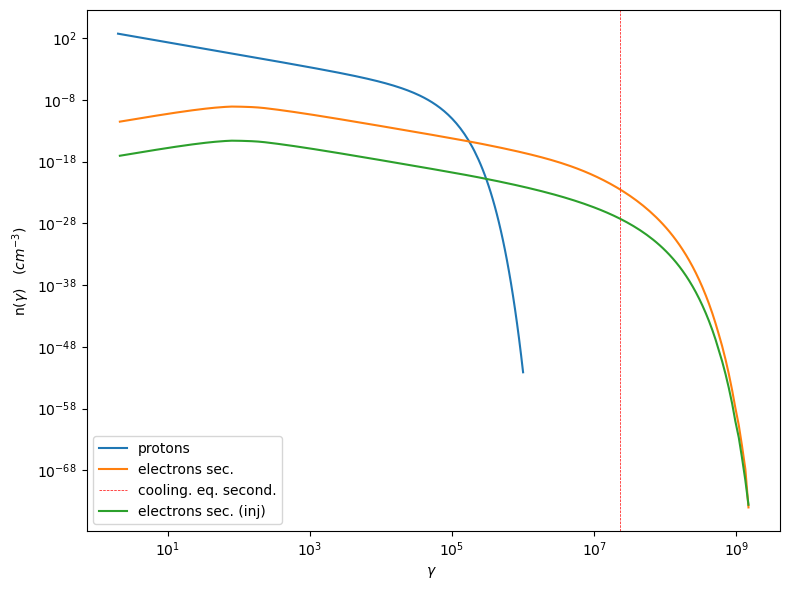
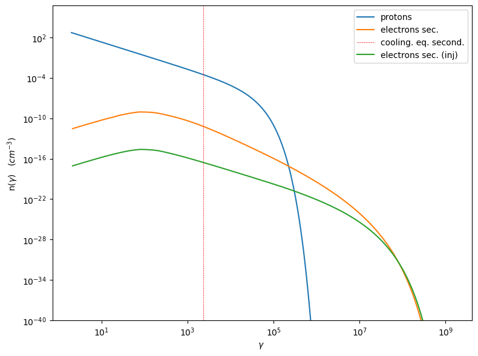
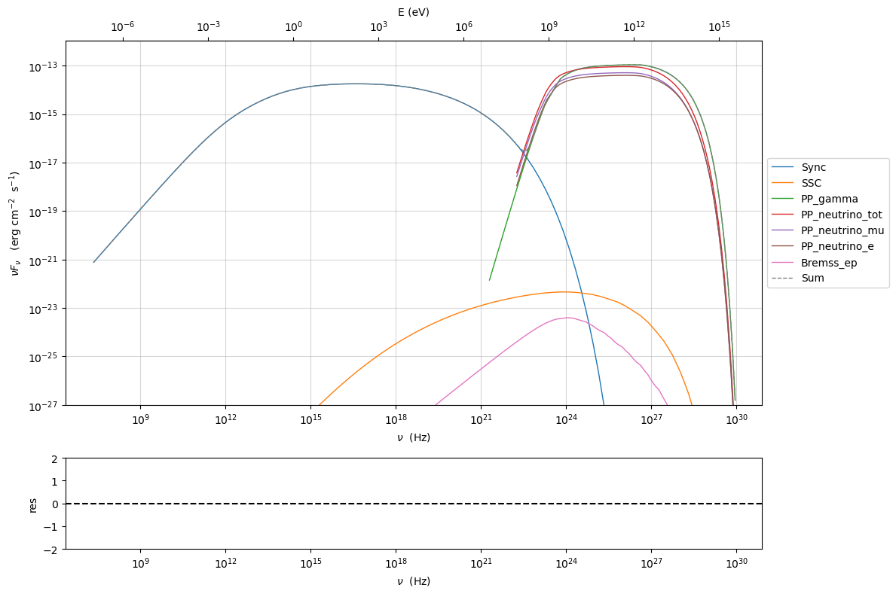
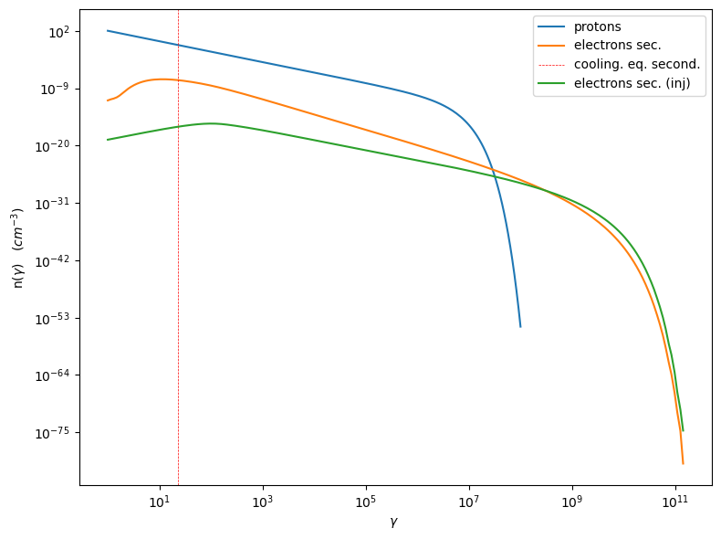
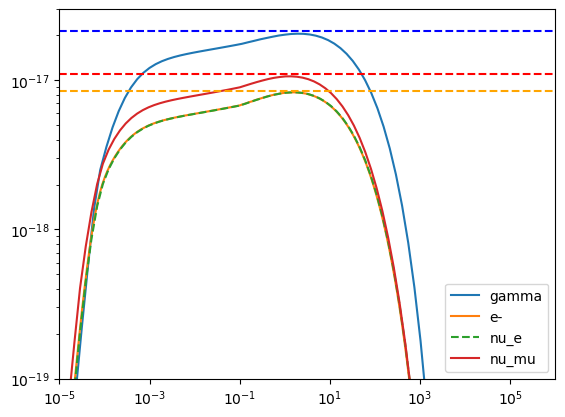
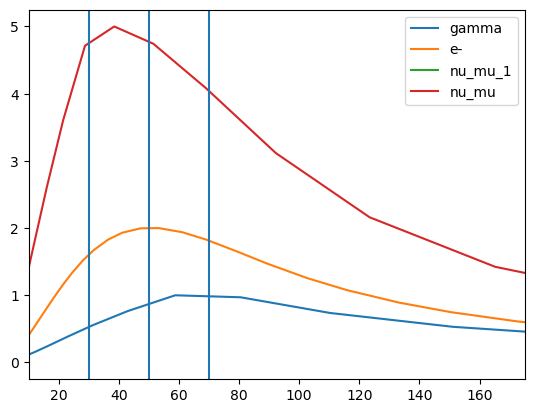

Hadronic pp jet model#
In this section we show the hadronic pp implemented for the Jet model. The pp implementation is based on the work presented in [Kelner2006].
Secondaries \(e^{\pm}\), are evolved to the equilibrium following the approach in [Inoue96].
A validation of the integral solution for the \(e^{\pm}\) equilibrium used for the pp jet against the Fokker-Plank equation solution, implemented in the JetTimeEvol class, is presented in Validation of the pp equilibrium against the Fokker-Plank equation solution
from jetset.jet_model import Jet
from jetset.jetkernel import jetkernel
import matplotlib.pyplot as plt
import numpy as np
import jetset
print('tested with',jetset.__version__)
tested with 1.4.0rc0
To get an hadronic jet with pp interaction, we set the
emitters_type='protons'
j=Jet(emitters_distribution='plc',verbose=False,emitters_type='protons')
j.parameters.R.val=1E16
j.parameters.N.val=1000
j.parameters.B.val=1
j.parameters.z_cosm.val=0.001
j.parameters.beam_obj.val=20
we can plot the emitters_distribution which will show the
equilibrium solution.
j.emitters_distribution.plot()
<jetset.plot_sedfit.PlotPdistr at 0x16ff0c530>

Changing a parameter will update the eq. solution for the plot of the emitters.
j.parameters.B.val=.01
j.emitters_distribution.plot()
<jetset.plot_sedfit.PlotPdistr at 0x317ac14f0>

j.parameters.B.val=1
j.eval(init=True)
j.show_model()
--------------------------------------------------------------------------------
model description:
--------------------------------------------------------------------------------
type: Jet
name: jet_hadronic_pp
geometry: spherical
protons distribution:
type: plc
gamma energy grid size: 201
gmin grid : 2.000000e+00
gmax grid : 1.000000e+06
normalization: True
log-values: False
radiative fields:
seed photons grid size: 100
IC emission grid size: 100
source emissivity lower bound : 1.000000e-120
spectral components:
name:Sum, state: on
name:Sum, hidden: False
name:Sync, state: self-abs
name:Sync, hidden: False
name:SSC, state: on
name:SSC, hidden: False
name:PP_gamma, state: on
name:PP_gamma, hidden: False
name:PP_neutrino_tot, state: on
name:PP_neutrino_tot, hidden: False
name:PP_neutrino_mu, state: on
name:PP_neutrino_mu, hidden: False
name:PP_neutrino_e, state: on
name:PP_neutrino_e, hidden: False
name:Bremss_ep, state: on
name:Bremss_ep, hidden: False
external fields transformation method: blob
SED info:
nu grid size jetkernel: 1000
nu size: 500
nu mix (Hz): 1.000000e+06
nu max (Hz): 1.000000e+30
flux plot lower bound : 1.000000e-30
--------------------------------------------------------------------------------
WARNING: AstropyDeprecationWarning: 'classic' backend for show_in_notebook() is deprecated as of 6.1. Instead, use the supported backend 'ipydatagrid'. [astropy.table.table]
| model name | name | par type | units | val | phys. bound. min | phys. bound. max | log | frozen |
|---|---|---|---|---|---|---|---|---|
| jet_hadronic_pp | R | region_size | cm | 1.000000e+16 | 1.000000e+03 | 1.000000e+30 | False | False |
| jet_hadronic_pp | R_H | region_position | cm | 1.000000e+17 | 0.000000e+00 | -- | False | True |
| jet_hadronic_pp | B | magnetic_field | gauss | 1.000000e+00 | 0.000000e+00 | -- | False | False |
| jet_hadronic_pp | T_esc_e_secondaries | escape_time | R / c | 1.000000e+00 | 1.000000e+00 | -- | False | False |
| jet_hadronic_pp | beam_obj | beaming | 2.000000e+01 | 1.000000e-04 | -- | False | False | |
| jet_hadronic_pp | z_cosm | redshift | 1.000000e-03 | 0.000000e+00 | -- | False | False | |
| jet_hadronic_pp | gmin | low-energy-cut-off | lorentz-factor* | 2.000000e+00 | 1.000000e+00 | 1.000000e+09 | False | False |
| jet_hadronic_pp | gmax | high-energy-cut-off | lorentz-factor* | 1.000000e+06 | 1.000000e+00 | 1.000000e+15 | False | False |
| jet_hadronic_pp | N | emitters_density | 1 / cm3 | 1.000000e+03 | 0.000000e+00 | -- | False | False |
| jet_hadronic_pp | NH_pp | target_density | 1 / cm3 | 1.000000e+00 | 0.000000e+00 | -- | False | False |
| jet_hadronic_pp | gamma_cut | turn-over-energy | lorentz-factor* | 1.000000e+04 | 1.000000e+00 | 1.000000e+09 | False | False |
| jet_hadronic_pp | p | LE_spectral_slope | 2.000000e+00 | -1.000000e+01 | 1.000000e+01 | False | False |
--------------------------------------------------------------------------------
gmin=1.0/jetkernel.MPC2_TeV
m=j.emitters_distribution.gamma_p>=gmin
print('U(p) (erg/cm3) =',j.emitters_distribution.eval_U(gmin=gmin))
U(p) (erg/cm3) = 5.257679637585932
%matplotlib inline
p=j.emitters_distribution.plot()
p.setlim(y_min=1E-40)

%matplotlib inline
p=j.plot_model()
p.setlim(y_min=1E-27)

Jet pp Consistency with Kelner 2006#
j=Jet(emitters_distribution='plc',verbose=False,emitters_type='protons')
j.parameters.z_cosm.val=z=0.001
j.parameters.beam_obj.val=10
j.parameters.gamma_cut.val=1000/(jetkernel.MPC2_TeV)
j.parameters.NH_pp.val=1
j.parameters.N.val=1
j.parameters.p.val=2.0
j.parameters.B.val=1.0
j.parameters.R.val=1E18
j.parameters.gmin.val=1
j.parameters.gmax.val=1E8
j.set_emiss_lim(1E-60)
j.set_IC_nu_size(100)
j.gamma_grid_size=200
j.nu_max=1E31
gamma_sec_evovled=np.copy(j.emitters_distribution.gamma_e)
n_gamma_sec_evovled=np.copy(j.emitters_distribution.n_gamma_e)
gamma_sec_inj=np.copy(j.emitters_distribution.gamma_e_second_inj)
n_gamma_sec_inj=np.copy(j.emitters_distribution.n_gamma_e_second_inj)
gmin=1.0/jetkernel.MPC2_TeV
j.set_N_from_U_emitters(1.0, gmin=gmin)
j.eval()
j.show_model()
--------------------------------------------------------------------------------
model description:
--------------------------------------------------------------------------------
type: Jet
name: jet_hadronic_pp
geometry: spherical
protons distribution:
type: plc
gamma energy grid size: 201
gmin grid : 1.000000e+00
gmax grid : 1.000000e+08
normalization: True
log-values: False
radiative fields:
seed photons grid size: 100
IC emission grid size: 100
source emissivity lower bound : 1.000000e-60
spectral components:
name:Sum, state: on
name:Sum, hidden: False
name:Sync, state: self-abs
name:Sync, hidden: False
name:SSC, state: on
name:SSC, hidden: False
name:PP_gamma, state: on
name:PP_gamma, hidden: False
name:PP_neutrino_tot, state: on
name:PP_neutrino_tot, hidden: False
name:PP_neutrino_mu, state: on
name:PP_neutrino_mu, hidden: False
name:PP_neutrino_e, state: on
name:PP_neutrino_e, hidden: False
name:Bremss_ep, state: on
name:Bremss_ep, hidden: False
external fields transformation method: blob
SED info:
nu grid size jetkernel: 1000
nu size: 500
nu mix (Hz): 1.000000e+06
nu max (Hz): 1.000000e+31
flux plot lower bound : 1.000000e-30
--------------------------------------------------------------------------------
WARNING: AstropyDeprecationWarning: 'classic' backend for show_in_notebook() is deprecated as of 6.1. Instead, use the supported backend 'ipydatagrid'. [astropy.table.table]
| model name | name | par type | units | val | phys. bound. min | phys. bound. max | log | frozen |
|---|---|---|---|---|---|---|---|---|
| jet_hadronic_pp | R | region_size | cm | 1.000000e+18 | 1.000000e+03 | 1.000000e+30 | False | False |
| jet_hadronic_pp | R_H | region_position | cm | 1.000000e+17 | 0.000000e+00 | -- | False | True |
| jet_hadronic_pp | B | magnetic_field | gauss | 1.000000e+00 | 0.000000e+00 | -- | False | False |
| jet_hadronic_pp | T_esc_e_secondaries | escape_time | R / c | 1.000000e+00 | 1.000000e+00 | -- | False | False |
| jet_hadronic_pp | beam_obj | beaming | 1.000000e+01 | 1.000000e-04 | -- | False | False | |
| jet_hadronic_pp | z_cosm | redshift | 1.000000e-03 | 0.000000e+00 | -- | False | False | |
| jet_hadronic_pp | gmin | low-energy-cut-off | lorentz-factor* | 1.000000e+00 | 1.000000e+00 | 1.000000e+09 | False | False |
| jet_hadronic_pp | gmax | high-energy-cut-off | lorentz-factor* | 1.000000e+08 | 1.000000e+00 | 1.000000e+15 | False | False |
| jet_hadronic_pp | N | emitters_density | 1 / cm3 | 1.058009e+02 | 0.000000e+00 | -- | False | False |
| jet_hadronic_pp | NH_pp | target_density | 1 / cm3 | 1.000000e+00 | 0.000000e+00 | -- | False | False |
| jet_hadronic_pp | gamma_cut | turn-over-energy | lorentz-factor* | 1.065789e+06 | 1.000000e+00 | 1.000000e+09 | False | False |
| jet_hadronic_pp | p | LE_spectral_slope | 2.000000e+00 | -1.000000e+01 | 1.000000e+01 | False | False |
--------------------------------------------------------------------------------
m=j.emitters_distribution.gamma_p>=gmin
print('U(p) (erg/cm3) =',j.emitters_distribution.eval_U(gmin=gmin))
U(p) (erg/cm3) = 1.0
%matplotlib inline
p=j.emitters_distribution.plot()

from jetset.utils import get_nested_attr
from jetset.jet_kernel_tools import get_spectral_c_array_read_only
j.eval()
j.emitters_distribution.plot()
def get_component(jet,j_name,nu_name):
j_nu_ptr=get_nested_attr(jet._blob, j_name)
nu_ptr=get_nested_attr(jet._blob, nu_name)
xg,yg=get_spectral_c_array_read_only(nu_ptr,j_nu_ptr,jet._blob.core.nu_grid_size)
m=yg>0
xg=xg[m]
yg=yg[m]
yg=yg*xg
yg=yg*jetkernel.erg_to_TeV
xg=xg*jetkernel.HPLANCK_TeV
return xg,yg

#Fig 12 Kelner 2006
%matplotlib inline
#j_nu_pp rate
xg,yg= get_component(j,'PP_gamma.spec.j_nu','PP_gamma.spec.nu')
x_nu_e,y_nu_e= get_component(j,'PP_neutrino.spec_e.j_nu','PP_neutrino.spec_e.nu')
x_nu_mu,y_nu_mu= get_component(j,'PP_neutrino.spec_mu.j_nu','PP_neutrino.spec_mu.nu')
x_nu_tot,y_nu_tot= get_component(j,'PP_neutrino.spec_tot.j_nu','PP_neutrino.spec_tot.nu')
x_nu_mu_2=x_nu_mu
y_nu_2=(y_nu_tot-y_nu_mu)*np.pi*4
x_nu_mu_1=x_nu_mu
y_nu_mu_1=(y_nu_mu-y_nu_2)*np.pi*4
yg=yg*np.pi*4
y_nu_mu=y_nu_mu*np.pi*4
y_nu_e=y_nu_e*np.pi*4
#e- rate
x_inj=np.copy(j.emitters_distribution.gamma_e_second_inj)
y_inj=np.copy(j.emitters_distribution.n_gamma_e_second_inj)
y_e=y_inj*x_inj*x_inj*jetkernel.MEC2_TeV
x_e=x_inj*0.5E6/1E12
plt.loglog(xg,yg,label='gamma')
plt.loglog(x_e,y_e,label='e-')
plt.loglog(x_nu_e,y_nu_e,'--',label='nu_e')
plt.loglog(x_nu_mu,y_nu_mu,label='nu_mu')
#plt.loglog(x_nu_mu_1,y_nu_mu_1,label='nu_mu_1')
plt.ylim(1E-19,3E-17)#
plt.xlim(1E-5,1E6)
plt.legend()
plt.axhline(2.15E-17,ls='--',c='b')
plt.axhline(8.5E-18,ls='--',c='orange')
plt.axhline(1.1E-17,ls='--',c='r')
<matplotlib.lines.Line2D at 0x31a459970>

#Fig 14 left panel
%matplotlib inline
y1=yg/(xg*xg)
plt.plot(xg*1E6,y1/y1.max(),label='gamma')
y1=y_e/(x_e*x_e)
m=y_e>0
plt.plot(x_e[m]*1E6,2*y1[m]/y1[m].max(),label='e-')
#y1=y_nu_tot/(x_nu_tot*x_nu_tot)
#m=y1>0
#plt.plot(x_nu_tot[m]*1E6,3*y1[m]/y1[m].max(),label='nu_tot')
y1=y_nu_mu_1/(x_nu_mu_1*x_nu_mu_1)
m=y1>0
plt.plot(x_nu_mu_1[m]*1E6,4*y1[m]/y1[m].max(),label='nu_mu_1')
y1=y_nu_mu/(x_nu_mu*x_nu_mu)
m=y1>0
plt.plot(x_nu_mu[m]*1E6,5*y1[m]/y1[m].max(),label='nu_mu')
#plt.xlim(1E-5,2E2)
plt.axvline(70)
plt.axvline(50)
plt.axvline(30)
plt.legend()
plt.xlim(10,175)
(10.0, 175.0)

Bibliography#
Tramacere et al. (2011), “Stochastic Acceleration and the Evolution of Spectral Distributions in Synchro-Self-Compton Sources: A Self-consistent Modeling of Blazars’ Flares”
Tramacere, Massaro and Taylor (2009), “Swift observations of the very intense flaring activity of Mrk 421 during 2006. I. Phenomenological picture of electron acceleration and predictions for MeV/GeV emission”
Massaro et al (2006), “radiation mechanisms: non-thermal, galaxies: active, BL Lacertae objects: general, BL Lacertae objects: individual: Mkn 501, Astrophysics”
Rybicki, George B. and Lightman, Alan P. (1986),”Radiative Processes in Astrophysics”
Blumenthal, George R. and Gould, Robert J. (1970), “Bremsstrahlung, Synchrotron Radiation, and Compton Scattering of High-Energy Electrons Traversing Dilute Gases”
Jones, Frank C. (1968), “Calculated Spectrum of Inverse-Compton-Scattered Photons”;
Dermer (1995) “On the Beaming Statistics of Gamma-Ray Sources”
Inoue & Takahara (1996) “Electron Acceleration and Gamma-Ray Emission from Blazars”
Dermer and Schlickeiser (2002), “Transformation Properties of External Radiation Fields, Energy-Loss Rates and Scattered Spectra, and a Model for Blazar Variability”
Georganopoulos, Kirk, and Mastichiadis (2001), “The Beaming Pattern and Spe
Finke et al. (2010), “EXTERNAL COMPTON SCATTERING IN BLAZAR JETS AND THE LOCATION OF THE GAMMA-RAY EMITTING REGION”
Donea & Protheroe (2003), “Radiation fields of disk, BLR and torus in quasars and blazars: implications for /γ-ray absorption”
Kelner et al. (206), “Energy spectra of gamma rays, electrons, and neutrinos produced at proton-proton interactions in the very high energy regime”
Dermer and Menon (2009), “High Energy Radiation from Black Holes: Gamma Rays, Cosmic Rays, and Neutrinos”;
Dermer and Schlickeiser (2002), “Transformation Properties of External Radiation Fields, Energy-Loss Rates and Scattered Spectra, and a Model for Blazar Variability”;
Franceschini et al. (2008), “Extragalactic optical-infrared background radiation, its time evolution and the cosmic photon-photon opacity”
Finke et al. (2010), “Modeling the Extragalactic Background Light from Stars and Dust”
Dominguez et al. (2011), “Extragalactic background light inferred from AEGIS galaxy-SED-type fractions”
Dominguez et al. (2023), “A new derivation of the Hubble constant from γ-ray attenuation using improved optical depths for the Fermi and CTA era”
Saldana-Lopez, et al. (2021), “An observational determination of the evolving extragalactic background light from the multiwavelength HST/CANDELS survey in the Fermi and CTA era”
Tramacere et al (2022), “Radio-γ-ray response in blazars as a signature of adiabatic blob expansion”